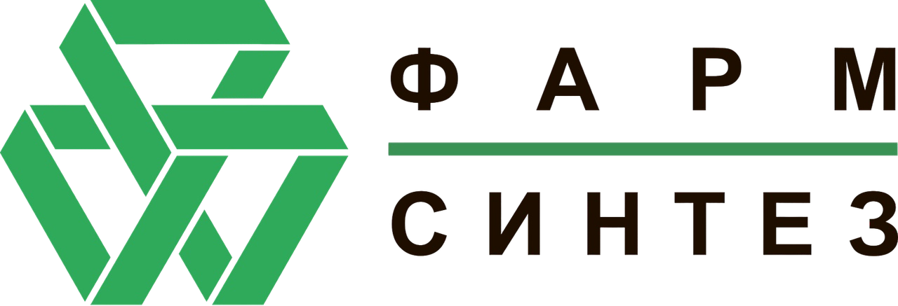
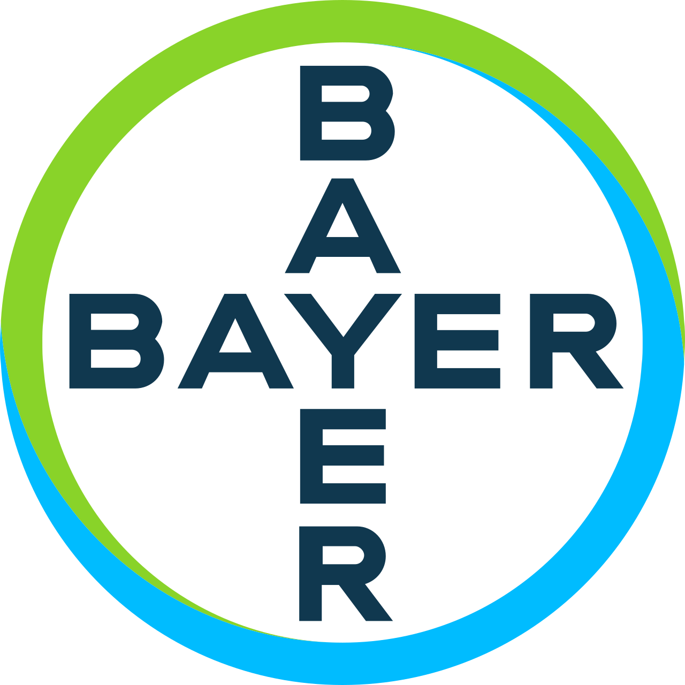

Межрегиональная научно-практическая конференция
21 мая 2026 года в 14:00
Модератор: Коршунов Николай Иванович, д.м.н., профессор кафедры терапии имени проф. Е.Н. Дормидонтова ИНПО ЯГМУ
д.м.н., доцент, зав. кафедрой общественного здоровья и здравоохранения ЯГМУ, главный внештатный ревматолог МЗ ЯО
к.м.н., зав. ревматологическим отделением Клиники им. Е.М. Тареева Сеченовского Университета (г. Москва)
д.м.н., профессор кафедры общественного здоровья и здравоохранения ЯГМУ
к.м.н., зав. лабораторией остеоартрита ФГБНУ «НИИ ревматологии им. В.А. Насоновой» (г. Москва)
д.м.н., профессор кафедры терапии ИНПО ЯГМУ, вице-президент Российской Ассоциации по остеопорозу

